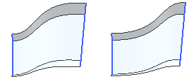

桥接曲线将显示您要编辑的单个曲线和桥接曲线的列表。可以单独地或作为一个组来选择桥接曲线。
当您选择了某个截面，且此截面含有您要编辑的桥接曲线，此列表会自动更新。
类型允许从以下选项中指定形状控制方法的类型：
深度和歪斜度 — 允许您更改所选曲线或桥接曲线组的深度和歪斜，方法与桥接曲线命令所使用的方法多少有点相似。
当您从桥接曲线列表选择了某条曲线或桥接曲线组时，会在图形窗口中高亮显示该曲线。您可以拖动深度和歪斜滑块(或者图形窗口中的手柄)以使之成形。
相切幅值 — 允许您更改所选曲线或桥接曲线组的相切幅值。
当从桥接曲线列表中选择了某条曲线或桥接曲线组时，会在图形窗口中高亮显示该曲线。然后您可以拖动起始和终止滑块以使之成形，或在数据字段中输入所需的值。
形状控制的下一个选项是两个滑块和数值输入框。
对于相切幅值，两个滑块是起始和结束。它们允许您控制相切在选定曲线起始和终止处的影响范围。
对于深度和歪斜，两个滑块是深度和歪斜。深度控制的是过渡形状的尖锐性，歪斜控制的是峰值的位置。
对于相切幅值和深度和歪斜，使用滑块的效果取决于所选的截面关系以及其他设置。下面的例子是改变一个2截面的过渡特征歪斜时的变化：
